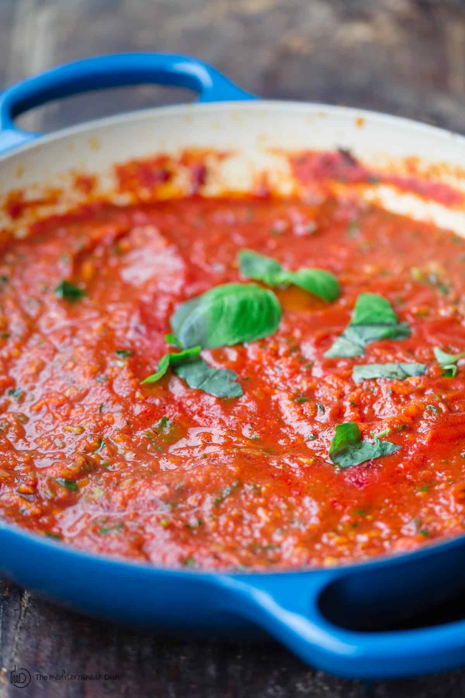

Classic Sauce Recipe

Ingredients
- One 28oz Can Crushed Tomatoes
- 1 Yellow Onion
- 1 (or like 3 or 4) Cloves of Garlic
- 1 Tbsp Basil (Preferred Fresh)
- 1 Tsp Oregano (Fresh or Dried)
- 2 Tbsp Olive Oil
- Salt
- Pepper
Steps
- Place the onion and oil in a large, heavy pan and over
medium high heat. Cook until the onion is soft and transparent.
- Add the garlic and cook about three minutes more.
- Add all other ingredients and continue to cook about 15 minutes
(the red pepper flakes produce a more profound taste.)
Note: The fast cooking will help to reduce the sauce to make it thick,
but be careful that it does not burn on the bottom.
back